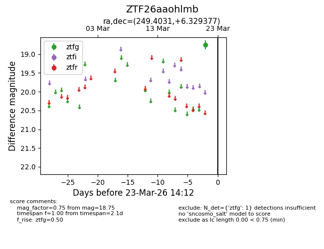
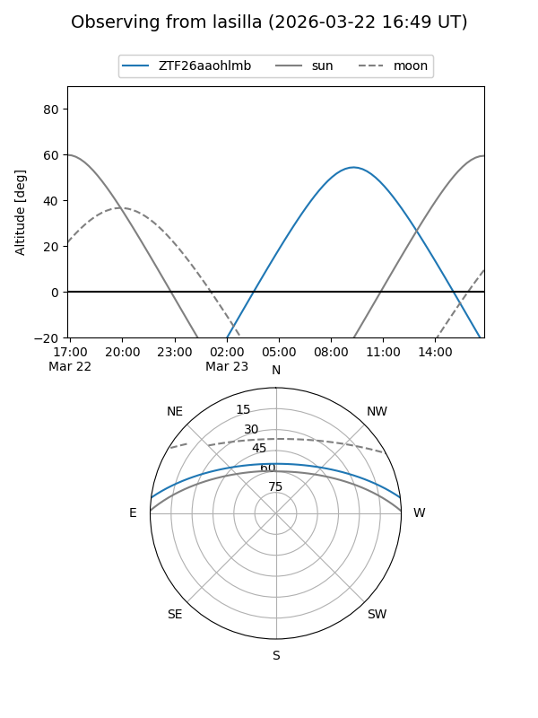
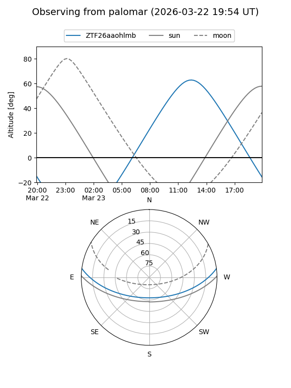

ZTF26aaohlmb
Target ZTF26aaohlmb at 2026-03-23 14:14
Aliases and brokers:
FINK: link
Lasair: link
ALeRCE: link
alt names
ZTF26aaohlmb (ztf,fink_ztf)
Coordinates:
equatorial (ra, dec) = 249.4031,+6.32938
equatorial (HMS+DMS) = 16:37:36.75,+06:19:45.76
galactic (l, b) = (22.5623,+32.54289)
Flags:
Photometry:
last ztfg=18.75
1 ztfg detections
Lightcurve

Visibility


Additional plots